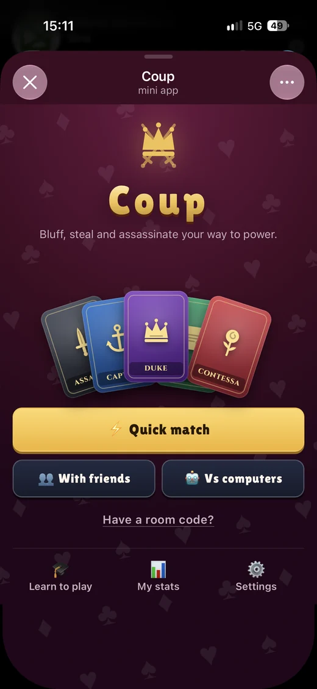
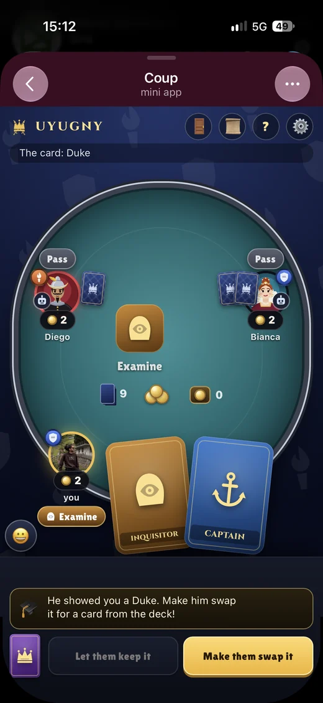
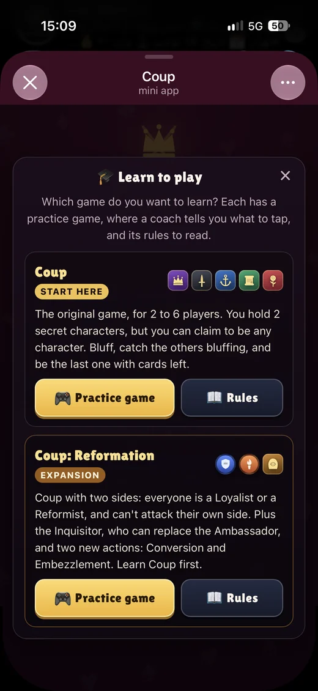

Coup, a Telegram game
The bluffing card game for 2 to 6 players, running inside Telegram as a Mini App. Quick match with strangers, private rooms with friends, computer players that bluff by the odds, the Reformation expansion, player stats, and the whole app in English and Persian. The server runs the rules, so hidden cards never reach other players' phones, and a dropped connection picks up right where you left off.
2–6players per table
349automated tests
2languages, incl. right to left